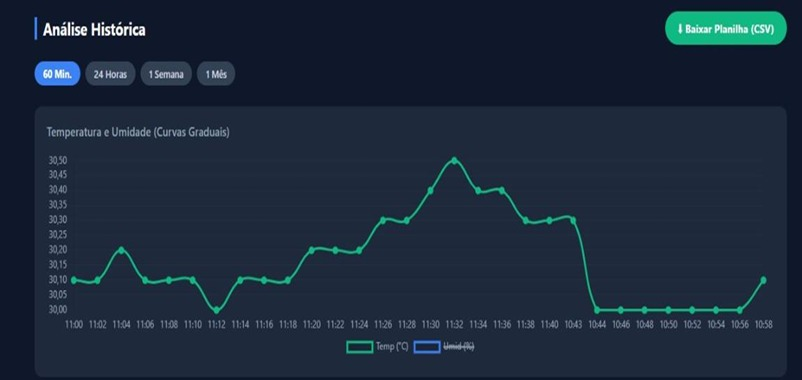

O Orange Pi é um SBC (Single Board Computer) — um mini computador completo em placa única, operando com fonte dedicada e cooler para rodar 24/7.
Divisão Inteligente de Camadas
- Microcontrolador (ESP32): Excelente para ler sensores, lidar com tempo real e operar com baixo consumo, mas limitado em memória e armazenamento.
- Mini Computador (Orange Pi): Entra na camada acima para assumir o trabalho pesado — tratar dados, organizar mensagens, armazenar histórico e servir a aplicação web.
SO Embarcado: DietPi (Linux)
- Baseado em Debian, porém ultra-minimalista (sem interface gráfica nem serviços pesados).
- Economiza RAM e CPU para manter o servidor estável 24 horas por dia.
- Gerencia processos em segundo plano, rede interna (
localhost) e armazenamento no cartão SD.


1. Broker MQTT + ACL
O Mosquitto recebe os pacotes do ESP32 e valida usuário, senha e regras .acl — definindo quem pode escrever (ESP32) e quem pode apenas ler (API e Dashboard).
2. Backend Python → CSV
Como o MQTT não guarda histórico, uma API em Python se inscreve no Mosquitto via localhost, captura cada leitura e grava em arquivo .csv com data, hora e medições.
3. Cloudflare & Domínio
O acesso externo usa domínio próprio do projeto protegido via Cloudflare, entregando a Dashboard ao usuário final com criptografia e segurança.

